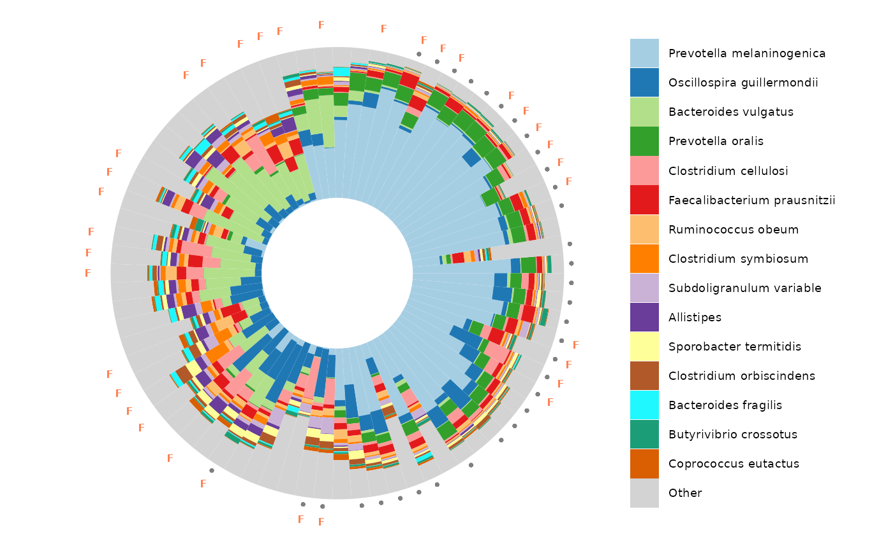
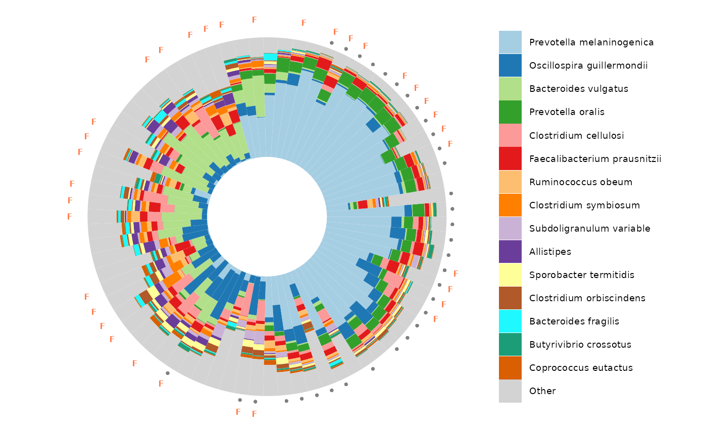

Circular compositional barplot sorted by ordination angle
Source:R/ord_plot_iris.R
ord_plot_iris.RdUse with ord_calc output as data argument.
Order of samples extracted from ordination axes in data.
Best paired with ordination plot made from same ord_calc output.
Usage
ord_plot_iris(
data,
tax_level,
axes = 1:2,
n_taxa = 10,
ord_plot = "none",
taxon_renamer = function(x) identity(x),
palette = distinct_palette(n_taxa),
anno_colour = NULL,
anno_colour_style = list(),
anno_binary = NULL,
anno_binary_style = list(),
keep_all_vars = FALSE,
scaling = 2,
count_warn = TRUE,
...
)Arguments
- data
psExtra output of ord_calc
- tax_level
taxonomic aggregation level (from rank_names(ps))
- axes
which 2 axes of ordination to use for ordering bars
- n_taxa
how many taxa to colour show distinct colours for (all other taxa grouped into "other").
- ord_plot
add a matching ordination plot to your iris plot ('list' returns separate plots in a list, 'above'/'below' uses patchwork to pair plots together into one)
- taxon_renamer
function to rename taxa in the legend
- palette
colour palette
- anno_colour
name of sample_data variable to use for colouring geom_segment annotation ring
- anno_colour_style
list of further arguments passed to geom_segment e.g. size
- anno_binary
name(s) of binary sample_data variable(s) (levels T/F or 1/0) to use for filtered geom_point annotation ring(s) (annotates at TRUE values)
- anno_binary_style
list of further arguments passed to geom_point e.g. colour, size, y, etc.
- keep_all_vars
slows down processing but is required for any post-hoc plot customisation options
- scaling
Type 2, or type 1 scaling. For more info, see https://sites.google.com/site/mb3gustame/constrained-analyses/redundancy-analysis. Either "species" or "site" scores are scaled by (proportional) eigenvalues, and the other set of scores is left unscaled (from ?vegan::scores.cca)
- count_warn
warn if count data are not available? i.e. phyloseq otu_table is not positive integers and psExtra counts slot is NULL
- ...
Arguments passed on to
comp_barplotmerge_otherif FALSE, taxa coloured/filled as "other" remain distinct, and so can have bar outlines drawn around them
bar_widthdefault 1 avoids random gapping otherwise seen with many samples (set to less than 1 to introduce gaps between samples)
bar_outline_colourline colour separating taxa and samples (use NA for no outlines)
bar_outline_widthwidth of line separating taxa and samples (for no outlines set bar_outline_colour = NA)
tax_transform_for_plotdefault "compositional" draws proportions of total counts per sample, but you could reasonably use another transformation, e.g. "identity", if you have truly quantitative microbiome profiling data
interactivecreates plot suitable for use with ggiraph
max_taxamaximum distinct taxa groups to show (only really useful for limiting complexity of interactive plots e.g. within ord_explore)
other_namename for other taxa after N
Details
data must also contain counts table if taxa were transformed (e.g. for clr PCA ordination)
(i.e. you must have used tax_transform with keep_counts = TRUE, if transformation was not "identity")
You cannot set a variable fill aesthetic (only fixed) for the annotation points, as the fill is used for the taxonomic composition bars
Examples
library(dplyr)
library(ggplot2)
data("dietswap", package = "microbiome")
# although these iris plots are great for 100s of samples
# we'll take a subset of the data (for speed in this example)
ps <- dietswap %>%
ps_filter(timepoint %in% c(1, 2)) %>%
# copy an otu to the sample data
ps_otu2samdat("Prevotella melaninogenica et rel.") %>%
# create a couple of useful variables
ps_mutate(
female = sex == "female",
african = nationality == "AFR",
log_P.melaninogenica = log10(`Prevotella melaninogenica et rel.` + 1)
)
# define a function for taking the end off the long genus names in this dataset
tax_renamer <- function(tax) {
stringr::str_remove(tax, " [ae]t rel.")
}
ord <- ps %>%
tax_agg("Genus") %>%
dist_calc("aitchison") %>%
ord_calc(method = "PCoA")
# ordination plot for comparison
ord %>% ord_plot(color = "log_P.melaninogenica", size = 3)
 ord_plot_iris(
data = ord,
tax_level = "Genus",
n_taxa = 10,
anno_colour = "nationality",
anno_colour_style = list(size = 3),
anno_binary = "female",
anno_binary_style = list(shape = "F", size = 2.5),
taxon_renamer = tax_renamer
) +
scale_colour_brewer(palette = "Dark2")
ord_plot_iris(
data = ord,
tax_level = "Genus",
n_taxa = 10,
anno_colour = "nationality",
anno_colour_style = list(size = 3),
anno_binary = "female",
anno_binary_style = list(shape = "F", size = 2.5),
taxon_renamer = tax_renamer
) +
scale_colour_brewer(palette = "Dark2")
 # It is also possible to use comp_barplot customisation arguments
# like bar_width and bar_outline_colour, and to make interactive iris plots
# using ggiraph:
if (interactive()) {
hover_over_me <- ord_plot_iris(
data = ord,
tax_level = "Genus",
n_taxa = 10,
anno_colour = "nationality",
anno_colour_style = list(size = 3),
anno_binary = "female",
anno_binary_style = list(shape = "F", size = 2.5),
taxon_renamer = tax_renamer,
interactive = TRUE,
bar_width = 0.8, bar_outline_colour = "black"
) +
scale_colour_brewer(palette = "Dark2")
ggiraph::girafe(ggobj = hover_over_me)
}
# Using PCA for ordination after transformations (e.g. clr) means the untransformed taxonomic
# data are only available for plotting as compositions if you transformed with
# tax_transform(keep_counts = TRUE) and your original data were in fact counts.
# Compositional data will also work, and you can set count_warn to FALSE to avoid the warning
clr_pca <- ps %>%
tax_agg("Genus") %>%
tax_transform("clr") %>%
ord_calc(method = "PCA")
# you can generate a simple paired layout of ord_plot and iris plot
# or separately create and pair the plots yourself, for more control
# simple pairing
ord_plot_iris(
data = clr_pca, n_taxa = 12,
tax_level = "Genus",
taxon_renamer = tax_renamer,
ord_plot = "below",
bar_width = 0.8, bar_outline_colour = "black",
anno_binary = "african",
anno_binary_style = list(
y = 1.08, colour = "gray50", shape = "circle open", size = 1, stroke = 1.5
)
)
# It is also possible to use comp_barplot customisation arguments
# like bar_width and bar_outline_colour, and to make interactive iris plots
# using ggiraph:
if (interactive()) {
hover_over_me <- ord_plot_iris(
data = ord,
tax_level = "Genus",
n_taxa = 10,
anno_colour = "nationality",
anno_colour_style = list(size = 3),
anno_binary = "female",
anno_binary_style = list(shape = "F", size = 2.5),
taxon_renamer = tax_renamer,
interactive = TRUE,
bar_width = 0.8, bar_outline_colour = "black"
) +
scale_colour_brewer(palette = "Dark2")
ggiraph::girafe(ggobj = hover_over_me)
}
# Using PCA for ordination after transformations (e.g. clr) means the untransformed taxonomic
# data are only available for plotting as compositions if you transformed with
# tax_transform(keep_counts = TRUE) and your original data were in fact counts.
# Compositional data will also work, and you can set count_warn to FALSE to avoid the warning
clr_pca <- ps %>%
tax_agg("Genus") %>%
tax_transform("clr") %>%
ord_calc(method = "PCA")
# you can generate a simple paired layout of ord_plot and iris plot
# or separately create and pair the plots yourself, for more control
# simple pairing
ord_plot_iris(
data = clr_pca, n_taxa = 12,
tax_level = "Genus",
taxon_renamer = tax_renamer,
ord_plot = "below",
bar_width = 0.8, bar_outline_colour = "black",
anno_binary = "african",
anno_binary_style = list(
y = 1.08, colour = "gray50", shape = "circle open", size = 1, stroke = 1.5
)
)
 # manual pairing
plot1 <- clr_pca %>% ord_plot(
plot_taxa = 6:1, tax_vec_length = 0.6,
colour = "gray50", shape = "nationality",
taxon_renamer = tax_renamer,
auto_caption = NA, center = TRUE,
) +
scale_shape_manual(values = c(AFR = "circle", AAM = "circle open"))
iris <- ord_plot_iris(
data = clr_pca, n_taxa = 15,
tax_level = "Genus",
taxon_renamer = tax_renamer,
anno_binary = "african",
anno_binary_style = list(y = 1.05, colour = "gray50", shape = "circle", size = 1)
) +
# shrink legend text size
theme(legend.text = element_text(size = 7))
cowplot::plot_grid(plot1, iris, nrow = 1, align = "h", axis = "b", rel_widths = 3:4)
# manual pairing
plot1 <- clr_pca %>% ord_plot(
plot_taxa = 6:1, tax_vec_length = 0.6,
colour = "gray50", shape = "nationality",
taxon_renamer = tax_renamer,
auto_caption = NA, center = TRUE,
) +
scale_shape_manual(values = c(AFR = "circle", AAM = "circle open"))
iris <- ord_plot_iris(
data = clr_pca, n_taxa = 15,
tax_level = "Genus",
taxon_renamer = tax_renamer,
anno_binary = "african",
anno_binary_style = list(y = 1.05, colour = "gray50", shape = "circle", size = 1)
) +
# shrink legend text size
theme(legend.text = element_text(size = 7))
cowplot::plot_grid(plot1, iris, nrow = 1, align = "h", axis = "b", rel_widths = 3:4)
 # you can add multiple rings of binary annotations
ord_plot_iris(
data = clr_pca, n_taxa = 15,
tax_level = "Genus",
taxon_renamer = tax_renamer,
anno_binary = c("african", "female"),
anno_binary_style = list(
colour = c("gray50", "coral"),
shape = c("circle", "F"), size = c(0.5, 2)
)
) +
theme(legend.text = element_text(size = 7))

# you can add multiple rings of binary annotations
ord_plot_iris(
data = clr_pca, n_taxa = 15,
tax_level = "Genus",
taxon_renamer = tax_renamer,
anno_binary = c("african", "female"),
anno_binary_style = list(
colour = c("gray50", "coral"),
shape = c("circle", "F"), size = c(0.5, 2)
)
) +
theme(legend.text = element_text(size = 7))
